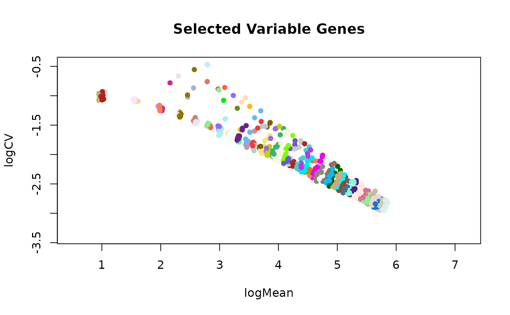
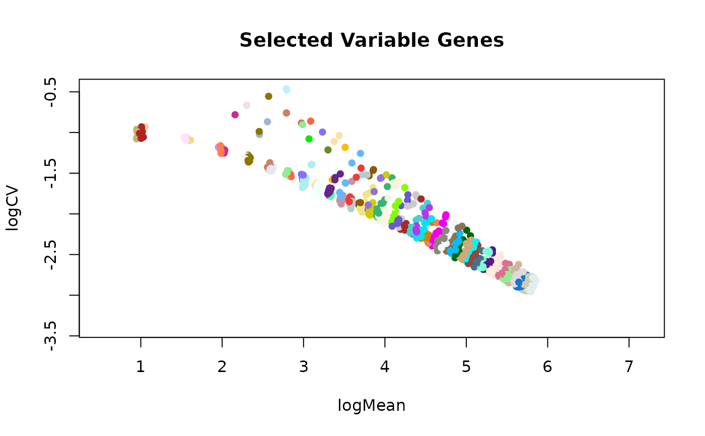

This function take the output from selVarGenes and plots the genes that have been
selected to be highly variable across the cells. It plot the log2 coefficient of variation as
a function of the log mean.
plotSelVarGenes(
selVarGenes_list = NULL,
xlab = "logMean",
ylab = "logCV",
main = "Selected Variable Genes",
pch = 16,
col = "#BEBEBE40",
sel_col = "steelblue",
colByBin = FALSE,
asp = 1,
...
)Arguments
- selVarGenes_list
the output list from the
selVarGenesfunction.- xlab
label for x-axis.
- ylab
label for y-axis.
- main
title for plot.
- pch
point pch.
- col
point color.
- sel_col
point color of the selected variable genes.
- colByBin
if TRUE, color the genes by the bin they've been assigned to.
- asp
the y/x aspect ratio. Set to 1 when
colByBinis TRUE.- ...
additional parameters for the
plotfunction.
Value
plot
Examples
if (requireNamespace("SingleCellExperiment", quietly = TRUE)) {
# packages
library(SingleCellExperiment)
# create example count matrix
# ... poisson distr per gene
mu <- ceiling(runif(n = 2000, min = 0, max = 100))
counts <- do.call(rbind, lapply(mu, function(x){rpois(1000, lambda = x)}))
counts <- counts + 1
# ... add signal to subset of genes (rows) and cells (columns)
i <- sample(x = 1:nrow(counts), size = 500)
j <- sample(x = 1:ncol(counts), size = 500)
counts[i, j] <- counts[i, j] + sample(5:10, length(i), replace = TRUE)
# create SCE
sce <- SingleCellExperiment(list(counts = counts))
# calculate sizeFactors
libsizes <- colSums(counts)
sizeFactors(sce) <- libsizes / mean(libsizes)
# select variable genes
varGenes <- selVarGenes(sce)
# plot
plotSelVarGenes(varGenes)
plotSelVarGenes(varGenes, colByBin=TRUE)
}
#> Count row names are empty, naming them now ...
#> Count column names are empty, naming them now ...
 
